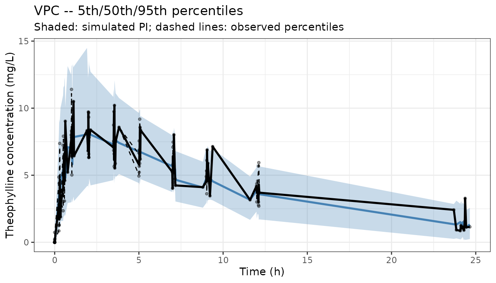
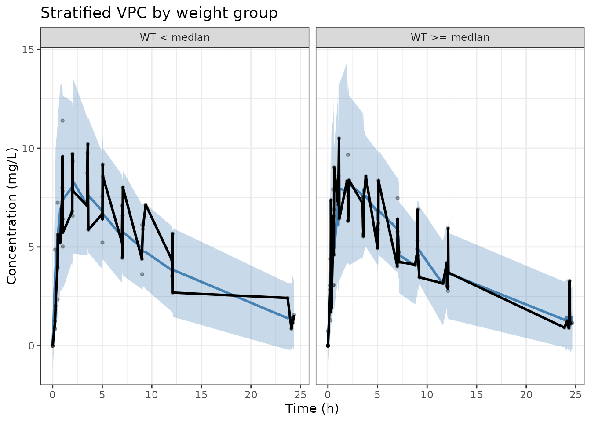

library(rxode2)
#> rxode2 5.0.2 using 2 threads (see ?getRxThreads)
#> no cache: create with `rxCreateCache()`
library(ggplot2)What is a VPC?
A visual predictive check (VPC) is a simulation-based diagnostic that compares the distribution of observed data to the distribution of model-predicted data. The observed data are overlaid on prediction intervals (e.g. 5th, 50th, 95th percentiles) computed from many simulated replicates of the study design. A well-fitting model produces prediction intervals that envelop the observed percentiles.
Setting up the model and observed data
We use a two-compartment PK model estimated from the
theo_sd dataset (single-dose theophylline) to illustrate
the workflow.
pkModel <- function() {
ini({
tka <- log(1.57)
tcl <- log(2.72)
tv <- log(31.07)
eta.ka ~ 0.6
eta.cl ~ 0.09
eta.v ~ 0.1
add.sd <- 0.7
})
model({
ka <- exp(tka + eta.ka)
cl <- exp(tcl + eta.cl)
v <- exp(tv + eta.v)
d/dt(depot) <- -ka * depot
d/dt(center) <- ka * depot - cl / v * center
cp <- center / v
cp ~ add(add.sd)
})
}For illustration we use the built-in theo_sd dataset as
observed data:
obs <- nlmixr2data::theo_sdNote these may come from many sources, a native nlmixr2
model, or an imported model from another tool like NONMEM or
Monolix.
Running replicated simulations
A VPC requires simulating the study design many times (typically 100–1000 replicates). Each replicate samples new ETAs and residual error.
Computing prediction intervals
Compute the 5th, 50th, and 95th percentiles of cp at
each nominal time point across all replicates:
library(data.table)
#>
#> Attaching package: 'data.table'
#> The following object is masked from 'package:base':
#>
#> %notin%
simDT <- as.data.table(simDat)
# Observed percentiles
obsDT <- as.data.table(obs[obs$EVID == 0, ])
obsPctl <- obsDT[, .(
p05 = quantile(DV, 0.05, na.rm = TRUE),
p50 = quantile(DV, 0.50, na.rm = TRUE),
p95 = quantile(DV, 0.95, na.rm = TRUE)
), by = TIME]
# Simulated prediction intervals
simPctl <- simDT[, .(
p05 = quantile(cp, 0.05, na.rm = TRUE),
p50 = quantile(cp, 0.50, na.rm = TRUE),
p95 = quantile(cp, 0.95, na.rm = TRUE)
), by = time]
setnames(simPctl, "time", "TIME")Plotting the VPC
ggplot() +
# Simulated prediction interval ribbon
geom_ribbon(data = simPctl,
aes(x = TIME, ymin = p05, ymax = p95),
fill = "steelblue", alpha = 0.3) +
# Simulated median line
geom_line(data = simPctl,
aes(x = TIME, y = p50),
colour = "steelblue", linewidth = 1) +
# Observed percentile lines
geom_line(data = obsPctl,
aes(x = TIME, y = p05),
colour = "black", linetype = "dashed") +
geom_line(data = obsPctl,
aes(x = TIME, y = p50),
colour = "black", linewidth = 1) +
geom_line(data = obsPctl,
aes(x = TIME, y = p95),
colour = "black", linetype = "dashed") +
# Raw observed data
geom_point(data = obs[obs$EVID == 0, ],
aes(x = TIME, y = DV),
alpha = 0.4, size = 1) +
labs(x = "Time (h)", y = "Theophylline concentration (mg/L)",
title = "VPC — 5th/50th/95th percentiles",
subtitle = "Shaded: simulated PI; dashed lines: observed percentiles") +
theme_bw()
Stratified VPC
For covariate-stratified VPCs, split both observed and simulated data
by the covariate before computing percentiles, then use
facet_wrap():
# Create a weight group (above/below median)
medWt <- median(obs$WT)
obs$wtGrp <- ifelse(obs$WT >= medWt, "WT >= median", "WT < median")
simDat$wtGrp <- ifelse(simDat$WT >= medWt, "WT >= median", "WT < median")
simDT2 <- as.data.table(simDat)
obsDT2 <- as.data.table(obs[obs$EVID == 0, ])
simPctl2 <- simDT2[, .(
p05 = quantile(sim, 0.05, na.rm = TRUE),
p50 = quantile(sim, 0.50, na.rm = TRUE),
p95 = quantile(sim, 0.95, na.rm = TRUE)
), by = .(time, wtGrp)]
setnames(simPctl2, "time", "TIME")
obsPctl2 <- obsDT2[, .(
p05 = quantile(DV, 0.05, na.rm = TRUE),
p50 = quantile(DV, 0.50, na.rm = TRUE),
p95 = quantile(DV, 0.95, na.rm = TRUE)
), by = .(TIME, wtGrp)]
ggplot() +
geom_ribbon(data = simPctl2,
aes(x = TIME, ymin = p05, ymax = p95),
fill = "steelblue", alpha = 0.3) +
geom_line(data = simPctl2,
aes(x = TIME, y = p50),
colour = "steelblue", linewidth = 1) +
geom_line(data = obsPctl2,
aes(x = TIME, y = p50),
colour = "black", linewidth = 1) +
geom_point(data = obsDT2,
aes(x = TIME, y = DV),
alpha = 0.3, size = 1) +
facet_wrap(~wtGrp) +
labs(x = "Time (h)", y = "Concentration (mg/L)",
title = "Stratified VPC by weight group") +
theme_bw()
Using the vpc package
The vpc CRAN package provides a purpose-built VPC
function that handles binning, confidence intervals on the prediction
intervals, and several plot options.
Tips
- Use at least 500 replicates for stable 5th/95th percentile estimates.
- For log-scale PK data add
scale_y_log10()to the ggplot. - For censored data (
CENS=1) usevpc_cens()from thevpcpackage. - For time-to-event models use
vpc_tte(). - Binning strategy (equal-width, equal-count, or user-defined)
strongly affects VPC appearance; the
vpcpackage provides several options via thebinsargument.